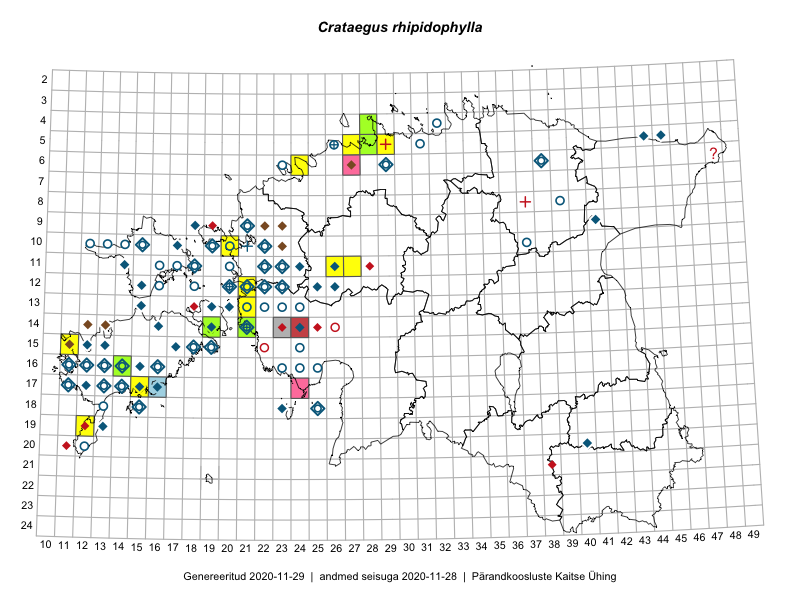

Crataegus rhipidophylla — harilik viirpuu
Rosaceae :: Crataegus kyrtostyla auct. (84); Crataegus rhipidophylla Gand. (33)

Kaart põhineb 154 kirjel:
vaatlusi 92
herbaareksemplare 25
PKÜ kirjeid1 32
ELFi kirjeid2 5
Taime kaasaegsed ja ajaloolised leiukohad asuvad 73 ruudus.
Tingmärgid ja ruutude arvud periooditi (U3 / V4 )
█ 2006–2020 (19/–)
◆/◇ 1971–2005 (46/65)
○ 1921–1970 (33/10)
+ kuni 1920 (0/4)
× hävinud (–/0)
? kaheldav (–/1)
| Ruut | Leidja(d) | Leiuaeg | Kirje |
|---|---|---|---|
| 12-21 | 2008-07-01–2008-07-01T09:00Z | ruut/ala: Crataegus rhipidophylla Gand. | |
| 13-21 | Mare Toom, I. Tool | 2008-07-08 | ruut/ala: Crataegus rhipidophylla Gand. |
| 10-12 | Haide-Ene Rebassoo | 1957–1984 | ruut/ala: Crataegus kyrtostyla auct. |
| 10-13 | Haide-Ene Rebassoo | 1957–1984 | ruut/ala: Crataegus kyrtostyla auct. |
| 10-15 | A. Tomson | 1935-05 | ruut/ala: Crataegus kyrtostyla auct. |
| 10-17 | H. Krall, L. Viljasoo | 1981-05-28 | ruut/ala: Crataegus kyrtostyla auct. |
| 10-17 | Taavi Tuulik | 1984–1986 | ruut/ala: Crataegus kyrtostyla auct. |
| 10-15 | Toomas Kukk | 1995-07-22–1997-07-03 | ruut/ala: Crataegus kyrtostyla auct. |
| 11-14 | Toomas Kukk, Ülo Niinemets | 1987-08-19 | ruut/ala: Crataegus kyrtostyla auct. |
| 11-16 | Haide-Ene Rebassoo | 1957–1984 | ruut/ala: Crataegus kyrtostyla auct. |
| 11-16 | Haide-Ene Rebassoo | 1958–1970 | ruut/ala: Crataegus kyrtostyla auct. |
| 11-17 | Haide-Ene Rebassoo | 1957–1984 | ruut/ala: Crataegus kyrtostyla auct. |
| 11-18 | Haide-Ene Rebassoo | 1957–1984 | ruut/ala: Crataegus kyrtostyla auct. |
| 12-15 | Taavi Tuulik | 1984–1986 | ruut/ala: Crataegus kyrtostyla auct. |
| 12-16 | Haide-Ene Rebassoo | 1957–1984 | ruut/ala: Crataegus kyrtostyla auct. |
| 12-18 | Haide-Ene Rebassoo | 1957–1984 | ruut/ala: Crataegus kyrtostyla auct. |
| 09-41 | Malle Leht, K. Tõnnson | 1987-08-23 | ruut/ala: Crataegus kyrtostyla auct. |
| 09-18 | Liivia Laasimer | 1975 | ruut/ala: Crataegus kyrtostyla auct. |
| 11-20 | E. Sits | 1935 | ruut/ala: Crataegus kyrtostyla auct. |
| 11-26 | botaaniline ekspeditsioon ZBI | 1976-08 | ruut/ala: Crataegus kyrtostyla auct. |
| 11-23 | E. Sits, A. Kalda | 1935–1952 | ruut/ala: Crataegus kyrtostyla auct. |
| 11-23 | Mare Leis, Heikki Luhamaa | 1999-08-29 | ruut/ala: Crataegus kyrtostyla auct. |
| 11-22 | E. Sits | 1935 | ruut/ala: Crataegus kyrtostyla auct. |
| 13-20 | M. Reitalu | 1998 | ruut/ala: Crataegus kyrtostyla auct. |
| 13-15 | Mari Reitalu | 1994 | ruut/ala: Crataegus kyrtostyla auct. |
| 13-19 | M. Leht, M. Abakumova | 1983-08-22–1983-08-24 | ruut/ala: Crataegus kyrtostyla auct. |
| 12-18 | H. Rebassoo | 1957–1972 | ruut/ala: Crataegus kyrtostyla auct. |
| 12-20 | 1983-07-13 | ruut/ala: Crataegus kyrtostyla auct. | |
| 12-20 | E. Sits | 1934 | ruut/ala: Crataegus kyrtostyla auct. |
| 12-21 | H. Krall | 1980-06–1980-07 | ruut/ala: Crataegus kyrtostyla auct. |
| 12-23 | 1983-07-14 | ruut/ala: Crataegus kyrtostyla auct. | |
| 12-23 | E. Sits | 1934–1936 | ruut/ala: Crataegus kyrtostyla auct. |
| 13-24 | E. Sits, A. Tomson | 1934–1937 | ruut/ala: Crataegus kyrtostyla auct. |
| 13-23 | E. Sits | 1934–1937 | ruut/ala: Crataegus kyrtostyla auct. |
| 12-22 | K. Pork | 1950–1960 | ruut/ala: Crataegus kyrtostyla auct. |
| 13-22 | A. Tomson, E. Sits | 1934–1937 | ruut/ala: Crataegus kyrtostyla auct. |
| 15-13 | M. Reitalu | 1991–1999 | ruut/ala: Crataegus kyrtostyla auct. |
| 15-19 | B. Saarsoo | 1938-06-25–1938-06-27 | ruut/ala: Crataegus kyrtostyla auct. |
| 15-18 | A. Tomson, B. Saarsoo | 1935–1938-06-27 | ruut/ala: Crataegus kyrtostyla auct. |
| 16-11 | B. Saarsoo | 1936-06–1937-08 | ruut/ala: Crataegus kyrtostyla auct. |
| 16-11 | Maret Kask, Linda Viljasoo | 1980-08 | ruut/ala: Crataegus kyrtostyla auct. |
| 16-11 | Toomas Kukk | 1992 | ruut/ala: Crataegus kyrtostyla auct. |
| 16-12 | B. Saarsoo | 1936-06–1936-09 | ruut/ala: Crataegus kyrtostyla auct. |
| 16-13 | B. Saarsoo | 1936-07–1937-06 | ruut/ala: Crataegus kyrtostyla auct. |
| 16-14 | B. Saarsoo | 1936-06–1937-07 | ruut/ala: Crataegus kyrtostyla auct. |
| 15-24 | L. Laasimer | 1948-07-28–1948-08-03 | ruut/ala: Crataegus kyrtostyla auct. |
| 15-19 | M. Reitalu | 1973–1997 | ruut/ala: Crataegus kyrtostyla auct. |
| 16-15 | Mari Reitalu | 1992–1997 | ruut/ala: Crataegus kyrtostyla auct. |
| 16-12 | Mari Reitalu | 1971–2005 | ruut/ala: Crataegus kyrtostyla auct. |
| 16-14 | Elle Meier | 1999 | ruut/ala: Crataegus kyrtostyla auct. |
| 16-16 | botaaniline ekspeditsioon ZBI | 1973-06 | ruut/ala: Crataegus kyrtostyla auct. |
| 15-18 | Toomas Kukk | 1998-06-24 | ruut/ala: Crataegus kyrtostyla auct. |
| 16-16 | Liivia Laasimer | 1977-08-26 | ruut/ala: Crataegus kyrtostyla auct. |
| 15-12 | Mari Reitalu | 1989–1999 | ruut/ala: Crataegus kyrtostyla auct. |
| 15-12 | Toomas Kukk, Marek Sammul | 1995–1998-07-25 | ruut/ala: Crataegus kyrtostyla auct. |
| 17-11 | B. Saarsoo | 1934-07–1934-10 | ruut/ala: Crataegus kyrtostyla auct. |
| 17-14 | H.-E. Rebassoo | 1962-05-17 | ruut/ala: Crataegus kyrtostyla auct. |
| 17-14 | T. Kukk, M. Sammul | 1998-07-23 | ruut/ala: Crataegus kyrtostyla auct. |
| 17-15 | T. Kukk, M. Sammul | 1998-07-24 | ruut/ala: Crataegus kyrtostyla auct. |
| 17-15 | M. Reitalu | 1991 | ruut/ala: Crataegus kyrtostyla auct. |
| 17-13 | B. Saarsoo | 1936–1938 | ruut/ala: Crataegus kyrtostyla auct. |
| 17-14 | B. Saarsoo | 1937–1938 | ruut/ala: Crataegus kyrtostyla auct. |
| 17-11 | Mari Reitalu | 1971–1998 | ruut/ala: Crataegus kyrtostyla auct. |
| 17-14 | T. Kukk, E. Roosaluste | 1995-08-16 | ruut/ala: Crataegus kyrtostyla auct. |
| 17-12 | M. Reitalu | 1971 | ruut/ala: Crataegus kyrtostyla auct. |
| 18-23 | TRÜ tudengid | 1973-07-14–1973-07-28 | ruut/ala: Crataegus kyrtostyla auct. |
| 19-13 | Liivia Laasimer | 1972-07-13 | ruut/ala: Crataegus kyrtostyla auct. |
| 20-12 | Maret Kask, Vilma Kuusk, Liivia Laasimer, Linda Viljasoo | 1959–1980 | ruut/ala: Crataegus kyrtostyla auct. |
| 18-23 | TRÜ tudengid | 1973-07-14–1973-07-28 | ruut/ala: Crataegus kyrtostyla auct. |
| 18-23 | TRÜ tudengid | 1973-07-14–1973-07-18 | ruut/ala: Crataegus kyrtostyla auct. |
| 10-20 | Gustav Vilbaste | 1930–1939 | ruut/ala: Crataegus kyrtostyla auct. |
| 18-25 | Haide-Ene Rebassoo | 1970-06-15 | ruut/ala: Crataegus kyrtostyla auct. |
| 12-20 | H.-E. Rebassoo | 1969-06-18 | ruut/ala: Crataegus kyrtostyla auct. |
| 14-21 | G. Vilbaste | 1930–1939 | ruut/ala: Crataegus kyrtostyla auct. |
| 11-20 | E. Lellep | 1961-07-26 | ruut/ala: Crataegus kyrtostyla auct. |
| 11-20 | H.-E. Rebassoo | 1962-06-08 | ruut/ala: Crataegus kyrtostyla auct. |
| 11-18 | H.-E. Rebassoo | 1979-06-23–1980-08-25 | ruut/ala: Crataegus kyrtostyla auct. |
| 13-20 | H.-E. Rebassoo | 1973-06-19 | ruut/ala: Crataegus kyrtostyla auct. |
| 05-45 | Linda Viljasoo, V. Meriste | 1972-08 | ruut/ala: Crataegus kyrtostyla auct. |
| 10-19 | Toomas Kukk, Elle Roosaluste | 1993-06–1998-05-31 | ruut/ala: Crataegus rhipidophylla Gand. |
| 06-24 | Erkki Otsman, Sergei Smirnov | 2015-05-29 | ruut/ala: Crataegus rhipidophylla Gand. |
| 05-27 | Erkki Otsman, Sergei Smirnov | 2015-07-08 | ruut/ala: Crataegus rhipidophylla Gand. |
| 15-11 | Mari Reitalu | 2014-05-18 | ruut/ala: Crataegus rhipidophylla Gand. |
| 05-28 | Erkki Otsman, Sergei Smirnov | 2015-06-26–2015-06-30 | ruut/ala: Crataegus rhipidophylla Gand. |
| 05-29 | Erkki Otsman, Sergei Smirnov | 2015-07-12–2015-07-13 | ruut/ala: Crataegus rhipidophylla Gand. |
| 19-12 | Oliver Parrest | 2015-05-16 | ruut/ala: Crataegus rhipidophylla Gand. |
| 05-28 | Erkki Otsman, Sergei Smirnov | 2015-06-29–2015-07-06 | ruut/ala: Crataegus rhipidophylla Gand. |
| 05-28 | Erkki Otsman, Sergei Smirnov | 2015-06-29–2015-07-06 | ruut/ala: Crataegus rhipidophylla Gand. |
| 11-26 | Aat Sarv | 2015-07-21 | ruut/ala: Crataegus rhipidophylla Gand. |
| 10-20 | Ott Luuk, Peedu Saar | 2014-07-29 | ruut/ala: Crataegus rhipidophylla Gand. |
| 11-27 | Andrus Jair, Tõnu Ploompuu | 2015-05-17 | ruut/ala: Crataegus rhipidophylla Gand. |
| 17-15 | Mari Reitalu | 2006-09-12 | ruut/ala: Crataegus rhipidophylla Gand. |
| 17-12 | Mari Reitalu | 1987-07-02 | TU265412: Crataegus rhipidophylla Gand. |
| 17-12 | Mari Reitalu | 1987-07-02 | TU265413: Crataegus rhipidophylla Gand. |
| 17-12 | Mari Reitalu | 1987-07-02 | TU265414: Crataegus rhipidophylla Gand. |
| 05-44 | Toomas Kukk | 2001-08-18 | TAA0012292: Crataegus rhipidophylla Gand. |
| 15-19 | Liivia Laasimer | 1972-07-25 | TAA0012298: Crataegus kyrtostyla auct. |
| 05-26 | Albert Üksip, Linda Viljasoo | 1960-08-12 | TAA0012299: Crataegus rhipidophylla Gand. |
| 18-15 | Linda Viljasoo | 1959-06-25 | TAA0012300: Crataegus kyrtostyla auct. |
| 12-18 | Haide-Ene Rebassoo | 1957-06-27 | TAA0012304: Crataegus kyrtostyla auct. |
| 12-18 | Haide-Ene Rebassoo | 1957-06-27 | TAA0012305: Crataegus kyrtostyla auct. |
| 12-18 | Haide-Ene Rebassoo | 1957-06-27 | TAA0012306: Crataegus kyrtostyla auct. |
| 18-25 | Gustav Vilbaste | 1940-08-03 | TAA0012334: Crataegus rhipidophylla Gand. |
| 04-28 | O. Abner | 2009-08-14 | TALL A009198: Crataegus rhipidophylla Gand. |
| 06-29 | O. Schmeidt | 2001-10-25 | TALL A002470: Crataegus rhipidophylla Gand. |
| 06-29 | Õ. Jaagomäe | 2001-10-04 | TALL A002471: Crataegus rhipidophylla Gand. |
| 18-15 | Uve Ramst | 1994-06-01 | TAM0026671: Crataegus rhipidophylla Gand. |
| 14-21 | K. Eichwald | 1955-06-20 | TU367909: Crataegus kyrtostyla auct. |
| 06-38 | Marie Nelke | 1982-10 | TU367910: Crataegus kyrtostyla auct. |
| 18-25 | A. Ehlvest, K. Kalamees, S. Lotman | 1997-07-09 | TU367911: Crataegus rhipidophylla Gand. |
| 14-21 | Toomas Kukk | 2013-06-30 | TAA0112272: Crataegus rhipidophylla Gand. |
| 14-21 | Toomas Kukk | 2013-06-30 | TAA0112273: Crataegus rhipidophylla Gand. |
| 16-14 | Raivo Kalle | 2014-08-25 | TAA0119807: Crataegus rhipidophylla Gand. |
| 14-21 | Toomas Kukk | 2009-06-06 | TAA0115105: Crataegus rhipidophylla Gand. |
| 06-38 | Olev Abner | 1998-08-02 | TALL A010991: Crataegus rhipidophylla Gand. |
| 05-28 | Aire Asu | 2018-08-30 | TALL A011057: Crataegus rhipidophylla Gand. |
| 14-19 | Meeli Mesipuu | 2019-06-08 | TAA0151248: Crataegus rhipidophylla Gand. |
| 13-20 | Urmas Tokko | 1993-06-07–1993-07-28 | ELF: 1907 |
| 18-15 | Ulve Pihlik | 1993-07-28 | ELF: 4308 |
| 10-22 | Tõnu Ploompuu | 1997-08-20 | ELF: 6372 |
| 17-16 | Mari Reitalu, Reet Viira | 2009-06-25 | ELF: 11217 |
| 17-16 | Mari Reitalu, Reet Viira | 2009-06-25 | ELF: 11219 |
| 06-27 | 2000-09-17 | PKÜ: 6265 | |
| 15-11;15-12 | 1999-10-03 | PKÜ: 1206 | |
| 10-22 | 2000-06-24 | PKÜ: 2752 | |
| 09-21 | 2000-10-01 | PKÜ: 2829 | |
| 09-21 | 2000-08-22 | PKÜ: 2568 | |
| 17-24 | 2006-08-04 | PKÜ: 13668 | |
| 12-22 | 2002-08-20 | PKÜ: 10236 | |
| 15-11 | 1999-09-12 | PKÜ: 1195 | |
| 14-12;14-13 | 1999-10-25 | PKÜ: 1255 | |
| 15-12 | 1999-09-23 | PKÜ: 1244 | |
| 14-21 | 1999-08-26 | PKÜ: 402 | |
| 10-22 | 1999-10-05 | PKÜ: 445 | |
| 12-22 | 2002-08-20 | PKÜ: 10240 | |
| 10-22 | 1999-10-18 | PKÜ: 475 | |
| 10-22 | 1999-10-05 | PKÜ: 447 | |
| 11-22 | 1999-09-21 | PKÜ: 886 | |
| 10-22 | 2000-09-28 | PKÜ: 2758 | |
| 12-22 | 2002-08-21 | PKÜ: 10243 | |
| 09-22;09-23 | 1999-08-14 | PKÜ: 369 | |
| 16-13 | 1999-10-23 | PKÜ: 1239 | |
| 06-27 | 2000-08-25 | PKÜ: 6241 | |
| 15-12;15-13 | 1999-09-23 | PKÜ: 1237 | |
| 10-23 | 1999-10-19 | PKÜ: 1014 | |
| 15-11 | 1999-09-12 | PKÜ: 1194 | |
| 16-13 | 1999-10-23 | PKÜ: 1240 | |
| 09-21 | 2000-08-22 | PKÜ: 2569 | |
| 15-11 | 1999-09-12 | PKÜ: 1197 | |
| 14-23 | 2006-08-04 | PKÜ: 13620 | |
| 15-11 | 1999-09-21 | PKÜ: 1200 | |
| 14-21 | 2001-01-29 | PKÜ: 3517 | |
| 10-22 | 1999-08-01 | PKÜ: 905 | |
| 15-12 | 1999-09-24 | PKÜ: 1250 |
Pärandkoosluste Kaitse Ühingu (PKÜ) andmebaas sisaldab inventeeritud koosluste kirjeldusi ja liigiloendeid. Kõige enam on andmeid niidutaimede kohta.↩︎
Eestimaa Looduse Fondi (ELF) andmebaas sisaldab inventeeritud koosluste kirjeldusi ja liigiloendeid. Eriti rohkesti on andmeid märgalade kohta.↩︎
Ruutude arv uue atlase andmekogu järgi. Muuhulgas arvestab vanemat herbaariumi, 2005. aasta atlase välitöölehtedelt uuesti digitaliseeritud andmeid jne. Uue atlase andmekogust pärinevad andmed on kaardile kantud siniste sümbolitega.↩︎
Ruutude arv 2005. aasta atlase (Kukk, T., Kull, T., Eesti taimede levikuatlas. Eesti Maaülikool, Põllumajandus- ja Keskkonnainstituut, Tartu, 2005) järgi. Andmeallikana on kasutatud levik.exe programmi, kus igas ruudus on registreeritud vaid uusim leid. Seetõttu on vanemate perioodide kohta andmed puudulikud. Kasutatud levik.exe andmestikus leidub mõningaid kõrvalekaldeid atlase trükis ilmunud versioonist, sagedamini tarnade ja käpaliste seas. Lisaks leidub selles andmestikus valik liike (peamiselt väheste leidudega tulnuktaimed), mille kaarte trükis ei avaldatud. Vana atlase andmed ruutudest, milles ei ole uue atlase andmekogus leide enne 2006. aastat, on kaardil esitatud punaste sümbolitega. Vana atlase andmetel hävinud ja kaheldavaid leiukohti pole hilisemate (taas)leidude põhjal korrigeeritud.↩︎